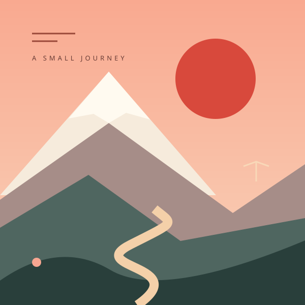

A SMALL JOURNEY, ONE PHRASE AT A TIME
여행을 여는
작은 한마디.
완벽하지 않아도 괜찮아요.
여섯 정거장, 스물네 번의 연습으로 가볍게 출발해요.

日本への第一歩6개의 정거장 중 0개 완료이 기기에 저장
A SMALL JOURNEY, ONE PHRASE AT A TIME
완벽하지 않아도 괜찮아요.
여섯 정거장, 스물네 번의 연습으로 가볍게 출발해요.

日本への第一歩